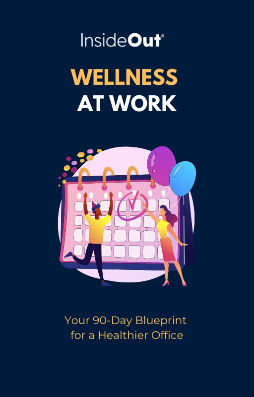

Organising a Wellness Month at work can be a transformative experience, promoting overall well-being and fostering a positive workplace culture. Our free eBook - a 90-day calendar of health-related events - is designed to help you plan and implement a successful Wellness Month in your organisation.
This comprehensive guide provides a curated list of key health events over a 90-day period. Each event is an opportunity to engage your team in a variety of well-being activities, fostering a healthy, balanced and supportive work environment. Here are a few highlights:
A well-executed Wellness Month can enhance team cohesion, reduce stress levels, improve productivity, and contribute to a positive work culture. Our guide provides practical advice and resources to make organising a Wellness Month simple and rewarding. Learn more and start planning today: